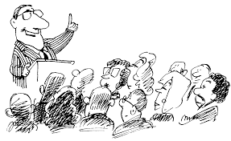

MODELOS DE COMUNICACION
 Modelo de BerloEl modelo nos dice que el objetivo de la comunicación es convertir al hombre en un agente efectivo que le permita alterar la relación original que existe entre su organismo y su medio circundante. En pocas palabras, para influir y afectar intencionalmente en los demás.
En el vídeo se muestra el cómo las personas tienen que interactuar con la pregunta que hace el emisor, haciendo que los receptores del mensaje tengan que responder en grupo y así tener una comunicación o interacción entre todos, logrando así pues lo que dice el modelo.
Modelo de SchrammEl modelo se centra en los procesos de comunicación colectiva. En pocas palabras, varias preguntas en conjunto Como se ve en el vídeo, el emisor da varios mensajes a las personas para que cada uno analicen las preguntas y decidan participar o no en la actividad.
Modelo de McLuhanMcLuhan sostiene que el discurso contiene pensamiento, y aquí termina la cadena de medios.
En el vídeo, el emisor da una serie de preguntas a los receptores y ellos tienen que pensar/analizar el mensaje para dar una respuesta indicada al emisor.